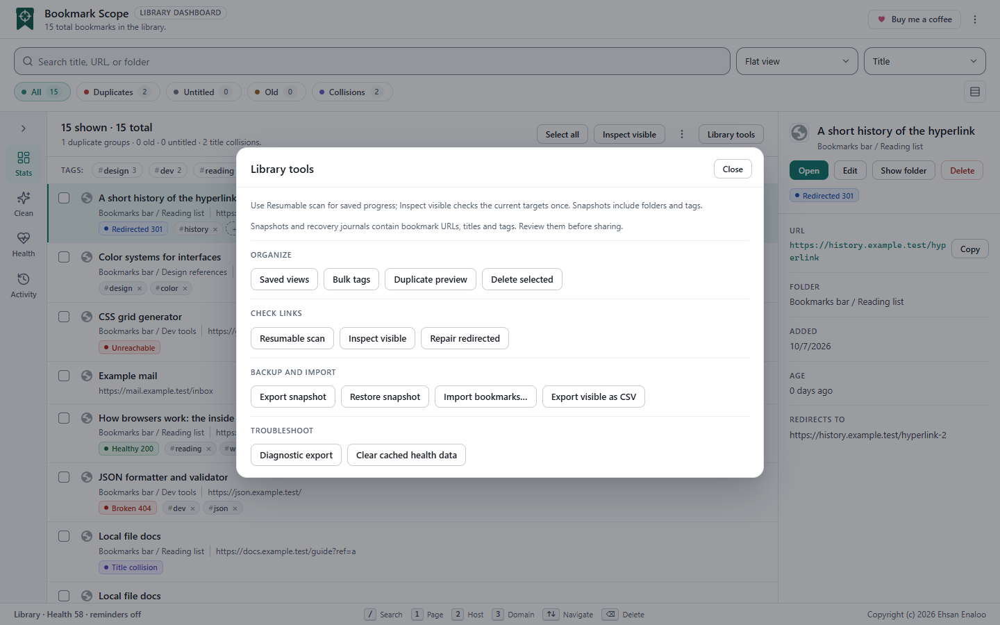

Which tool for which job#
| I want to… | Use | Keeps |
|---|---|---|
| Back up my folder tree and tags before a cleanup | Export snapshot | Folders, order, titles, addresses, dates (descriptive), tags |
| Put a backup back | Restore snapshot | Recreates the tree in a new folder with new IDs |
Bring in bookmarks from a browser bookmarks.html file, Pocket, Pinboard, Raindrop or a text list | Import bookmarks… | Titles, addresses, tags, descriptive dates |
| Hand a list of what I see to a spreadsheet or script | Export visible (JSON) or Export visible as CSV | Title, address, folder path, date, tags |

Snapshots#
Export a snapshot
Choose Library tools → Export snapshot. Your browser downloads bookmark-scope-snapshot.json. It records the full nested folder tree in order, with each bookmark’s title, address, date added and tags, plus a creation time and the extension version. Format name: bookmark-scope-snapshot, version 1.
Restore a snapshot
Choose the file
Library tools → Restore snapshot, then pick a snapshot JSON (up to 10 MiB).
Read the preview
The dialog reports Folders / bookmarks / excluded, shows the tree, and lists anything excluded because its address is not
http/https. Nothing has been created yet. Technical details are available as an optional disclosure.Choose a destination
Pick a writable folder. Restoration is additive: it creates a new folder named Bookmark Scope snapshot YYYY-MM-DD inside it and rebuilds the tree there. Existing bookmarks are never overwritten, merged or deduplicated.
Restore
Choose Restore into new folder. The result reads Created / excluded / failed / remaining, followed by a result for each item.
What a restore cannot do
- Original IDs and original dates added are not restored. Chrome assigns them. Dates in the snapshot are descriptive only.
- It does not restore Chrome’s own root folders as roots. They become ordinary folders inside the new snapshot folder.
- It does not restore saved views, history, settings or health results.
- A folder that fails to be created leaves its children not attempted. Nothing is retried automatically.
- Running the same restore twice makes a second copy. Check the result and your bookmarks before retrying.
The recovery journal
While restoring, Bookmark Scope records each created item in a journal in its local storage, so a partial or interrupted restore leaves evidence. The Recovery journal button downloads it as bookmark-scope-restore-journal.json. The twenty most recent completed restores are kept; incomplete ones are kept until you resolve them. Creation of a bookmark and writing the journal are separate browser operations, so a crash between the two can leave a bookmark that is not journaled.
Import#
Choose More actions → Import bookmarks… (list header) or Library tools → Import bookmarks…, then pick a file of up to 10 MB. The picker offers .html, .json, .csv and .txt.
Supported formats
| Source | File | How it is recognised | What is imported |
|---|---|---|---|
| Chrome, Edge, Firefox, Safari, Brave and most bookmark managers | bookmarks.html (Netscape bookmark file) | The content starts with the NETSCAPE-Bookmark-file-1 doctype or has the nested folder and link structure; the file name does not matter | Title, address, Firefox tags, folder path and added date (both descriptive) |
| HTML export | File name contains pocket or ril_export, or the content starts like a Pocket list | Title, address, added time, tags | |
| Pinboard | JSON export | File name contains pinboard and either ends in .json or the content starts with [ | Title (Pinboard’s “description”), address, time, tags |
| Raindrop.io | CSV export | File name contains raindrop, or the header starts id,title, | Title, address, created time, tags |
| Bookmark Scope | JSON export (array or an object with a bookmarks array) | File name ends in .json | Title, address, path, date, tags |
| Bookmark Scope | CSV export (Title,URL,Folder path,Date added,Tags,Text encoding) | File name ends in .csv | Same fields |
| Plain text | One address per line | Any other file | Addresses only; titles become Imported 1, Imported 2… |
The import preview
Nothing is created until you confirm. The dialog shows how many bookmarks the file contains, how many match your existing library or repeat within the file, and how many were excluded (invalid or not http/https), plus any parser warnings. You choose:
- Destination: a writable folder. All imported bookmarks are created flat in that folder; folder paths and original dates in the file are descriptive only.
- Duplicate policy:
- Skip matches (default): do not create bookmarks that match an existing bookmark or an earlier row in the same file.
- Keep all: create every supported row.
- Merge tags: add the row’s tags to the first existing match instead of creating a copy; the existing bookmark’s title, address and folder are not changed.
Choose Import bookmarks to apply. The library is re-checked at that moment. The result reads Created / merged / skipped / failed / remaining with a line per item.
Safety rules for imports
- Only
httpandhttpsaddresses are imported; anything else is excluded and counted. - If saving a bookmark’s tags fails, Bookmark Scope tries to remove that one new bookmark so you do not get a half-imported item, and records what it could and could not do.
- A partial import is journaled. If the dashboard finds an unfinished import on startup it shows an Import recovery toast with a JSON button to download the evidence. The Recovery journal button in the import dialog does the same.
Export visible (JSON or CSV)#
In the list header menu, choose Export visible. You get bookmark-manager-visible-<timestamp>.json containing the bookmarks that match the current search and filters: title, address, folder path, date added and tags. It does not include IDs, preferences, history or health results.
This JSON can be fed back into Import bookmarks….
For a spreadsheet, choose Export visible as CSV in the same menu (it is also in the command palette and under Library tools). You get bookmark-manager-visible-<timestamp>.csv with the same bookmarks and a header row: Title,URL,Folder path,Date added,Tags,Text encoding. The file is UTF-8 with a byte-order mark so that Excel reads non-Latin text, every cell is quoted, rows end in CRLF, and tags are a JSON list in one cell. A cell that starts with =, +, -, @, a tab, a line break or an apostrophe gets a leading apostrophe so that a spreadsheet does not run it as a formula; the Text encoding column tells Bookmark Scope to remove that apostrophe when you import the file again. Importing the CSV restores titles, addresses, folder path, tags and date as descriptive data; folders are not recreated.
A backup routine that works#
- Before big changes: Export snapshot. Keep the file somewhere you back up.
- After big changes: take another one.
- If something goes wrong: Restore snapshot into a new folder, then move back what you need. You can also open the restored folder in Chrome’s bookmark manager.
Bookmark Scope’s Undo and journals are for recovering from mistakes within a session. They are not a substitute for a snapshot.